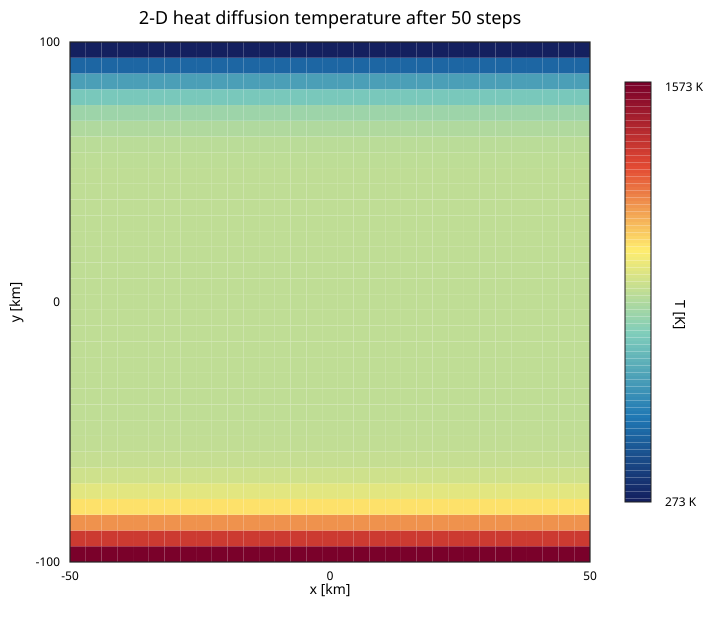

Heat Diffusion
FEMTools.jl includes a transient multi-phase heat-diffusion solver based on a pseudo-transient dynamic-relaxation (DR) scheme. The solver is backend-agnostic and runs on both CPU and GPU via KernelAbstractions.jl.
Physical model
The transient heat equation for a mixture of nphases phases is
\[\sum_p \rho_p C_{p,p} \frac{\partial T}{\partial t} = \sum_p k_p \nabla^2 T + s\]
where the per-phase density follows a linearised equation of state
\[\rho_p = \rho_{0,p} \bigl(1 - \alpha_p (T - T_\text{ref}) + P / K_p\bigr), \quad T_\text{ref} = 273\,\text{K}.\]
Material properties (k, Cp, ρ0, α, K) are grouped in a ThermalMaterial. Each field is an NTuple{nphases, FP}, so phase count and precision remain compile-time information. The reference temperature Tref is passed to solver! when advancing the thermal field.
FEMTools.ThermalMaterial — Type
ThermalMaterial(; k=(1.0,), Cp=(1.0,), ρ0=(1.0,), α=(1.0,), K=(1.0,))Per-phase thermal conductivity, heat capacity, reference density, thermal expansivity, and bulk modulus. All properties use the same floating-point type and number of phases; mismatched tuple lengths throw DimensionMismatch.
Fields use NTuple{nphases, FP} so phase count and precision remain available to the compiler. The defaults describe one unit-valued Float64 phase.
Solver state
FEMTools.ThermalDiffusionDR — Type
ThermalDiffusionDR{nphases, _T, _TI, FP}Solver state for a transient multi-phase heat-diffusion problem solved with a pseudo-transient dynamic-relaxation (DR) scheme.
Type parameters
nphases— number of material phases (compile-time constant)_T— nodal float array type (e.g.Vector{Float64}on CPU,CuArrayon GPU)_TI— nodal integer array type (same backend as_T, element typeInt)FP— floating-point precision (Float32orFloat64)
Nodal arrays (length nnodes)
| Field | Description |
|---|---|
R | Current residual |
R0 | Residual snapshot used for λ_min estimate |
∂R∂T | Row-sum Jacobian estimate |
PC | Diagonal preconditioner |
T | Temperature (current iterate) |
T0 | Temperature at previous time step |
∂T∂τ | Pseudo-transient rate |
P | Pressure |
source | Nodal heat source |
phases | Per-node phase index (1-based integer) |
phases defaults to all ones (single phase). Overwrite with copyto!(dr.phases, ...) to assign multi-phase configurations.
Dirichlet boundary conditions (DOF indices and prescribed values) are problem-specific and are therefore passed directly to solver! rather than stored here.
Material properties
Properties are supplied together through ThermalMaterial and stored as NTuple{nphases, FP} fields in the solver state. The reference temperature Tref for the density EOS is passed to solver!.
Solver parameters
CFL, c_fact, ϵ (convergence tolerance).
Constructors
ThermalDiffusionDR(backend, nnodes, material::ThermalMaterial; CFL=0.98, c_fact=0.9, ϵ=1e-6)
ThermalDiffusionDR(nnodes, material::ThermalMaterial; kwargs...) # CPUThe tuple-based constructors remain available for compatibility.
All nodal float arrays are zero-initialised; phases is initialised to 1. The float type FP and phase count are inferred from material.
Constructor
material = ThermalMaterial(; k, Cp, ρ0, α, K)
# CPU (default)
dr = ThermalDiffusionDR(nnodes, material)
# Explicit backend (e.g. GPU)
using CUDA
dr = ThermalDiffusionDR(CUDABackend(), nnodes, material)All keyword arguments (CFL, c_fact, ϵ) are converted to the float type inferred from the phase-property tuples, so mixing Float32 properties with Float64 literals in keyword arguments is safe.
Example — two-phase problem
using FEMTools, DomainSets, KernelAbstractions
FP = Float64
nphases = 2
material = ThermalMaterial(;
k = (FP(3.0), FP(5.0)), # W m⁻¹ K⁻¹
Cp = (FP(1000.0), FP(800.0)), # J kg⁻¹ K⁻¹
ρ0 = (FP(3000.0), FP(2700.0)), # kg m⁻³
α = (FP(3e-5), FP(2e-5)), # K⁻¹
K = (FP(1e11), FP(8e10)), # Pa
)
Tref = FP(273.0) # K
element = ReferenceElement(LinearElement{1, 2})
mesh = Mesh(0.0..1.0, element, 100)
dr = ThermalDiffusionDR(CPU(), mesh.nnodes, material; CFL=0.9)Structured 2-D Example
The script examples/heat_diffusion/2D_heat_diffusion.jl solves transient heat diffusion on a structured 2-D quadratic mesh. It uses a hot lower boundary (1573 K), a cold upper boundary (273 K), and insulated side boundaries:
using FEMTools, DomainSets, KernelAbstractions, StaticArrays
using DomainSets: ×
backend = CPU()
workgroup = 64
FP = Float64
Lx, Ly = 50e3, 100e3
Ω = (-Lx..Lx) × (-Ly..Ly)
element = ReferenceElement(QuadraticElement{2, 9, FP})
mesh = Mesh(backend, Ω, element, (30, 30))
material = ThermalMaterial(;
k = (FP(3.0), FP(2.5)), Cp = (FP(1200.0), FP(1100.0)),
ρ0 = (FP(3300.0), FP(2700.0)), α = (FP(3e-5), FP(2e-5)),
K = (FP(1e11), FP(8e10)),
)
Tref = FP(273.0)
dr = ThermalDiffusionDR(backend, mesh.nnodes, material; CFL=FP(0.9))The full example applies Dirichlet boundary conditions at the top and bottom, then advances the field with solver! for 50 time steps. Run it from the examples environment:
julia --project=examples examples/heat_diffusion/2D_heat_diffusion.jlThe resulting temperature field is:

Assembly
Shared element integration lives in assembly/residual.jl; atomic and colored routing live in residual_atomics.jl and residual_colored.jl. All paths operate on element-local SVectors inside KernelAbstractions kernels:
| Function | Role |
|---|---|
assemble_diffusion_matrices_atomix! | Top-level assembler; fills R, ∂R∂T, PC using atomic scatter |
assemble_diffusion_matrices_colored! | Top-level assembler; uses conflict-free element color groups instead of atomics |
integrate_residual | Quadrature-point loop; returns the element residual SVector |
element_residual | Gathers element-local fields and calls integrate_residual |
element_jacobian | ForwardDiff Jacobian of integrate_residual; returns row sums and diagonal |
Reference
solver! advances the field for one time step; the pseudo-transient update kernels and Dirichlet enforcement are shared by all dynamic-relaxation solvers.
FEMTools.solver! — Function
solver!(dr::ThermalDiffusionDR, Δt, mesh, geo, element,
Γ_dofs, Γ_zero, Γ_vals, backend, workgroup; kwargs...)Run the pseudo-transient dynamic-relaxation (DR) solver on dr for one time step of size Δt using explicitly supplied geometry, element, boundary arrays, backend, and workgroup size.
ncheck controls how often spectral estimates and convergence are recomputed, and iterMax limits the number of pseudo-transient iterations. Set verbose=false to suppress residual output. Tref is the reference temperature used by the density equation of state.
The solver modifies dr.T in-place. dr.T0 must be set to the temperature at the previous physical time step before calling.
solver!(dr, Δt, mesh, bc; workgroup=256, kwargs...)Solve one thermal-diffusion time step using the element and geometry stored in mesh and the prescribed values in bc. The backend is inferred from mesh.coords; remaining keywords are forwarded to the low-level solver.
solver!(dr::LithostaticPressureDR, mesh, geo, element,
Γ_dofs, Γ_zero, Γ_vals, backend, workgroup; kwargs...)Run the pseudo-transient dynamic-relaxation (DR) solver for the lithostatic-pressure problem ∫ ∇P·∇v dΩ = ∫ ρ(T) g·∇v dΩ.
dr.T must be set to the current temperature field before calling. Geometry, element, boundary arrays, backend, and workgroup size are supplied explicitly. Tref and g control the density equation of state and body-force vector. g is the gravitational acceleration vector; either an SVector or a plain Tuple of matching length (e.g. SVector(0, -9.81) or (0.0, -9.81) for 2-D). The default is only appropriate for 2-D problems. ncheck controls how often spectral estimates and convergence are recomputed. iterMax is the maximum number of pseudo-transient iterations before a non-convergence error. Set verbose = false to suppress per-iteration residual output.
Modifies dr.P in-place. Returns nothing on convergence.
solver!(dr, mesh, bc; workgroup=256, kwargs...)Solve for lithostatic pressure using the element and geometry stored in mesh and the prescribed values in bc. The backend is inferred from mesh.coords; remaining keywords are forwarded to the low-level solver.
FEMTools.apply_dirichlet! — Function
apply_dirichlet!(v, dofs, vals, backend, workgroup)Overwrite v[dofs[i]] = vals[i] for all i on the target backend.
Used inside solver! to pin boundary nodes at Dirichlet values before and after pseudo-transient updates. Returns nothing.
FEMTools.update_rate_kernel! — Function
update_rate_kernel!(∂u∂τ, R, PC, β)KernelAbstractions kernel for the Chebyshev-accelerated pseudo-transient rate update.
Sets ∂u∂τ[i] = R[i] / PC[i] + β * ∂u∂τ[i]. With β = 0 this is a plain preconditioned gradient-descent step; with β > 0 it is the momentum term of the Chebyshev recurrence. PC is the diagonal preconditioner (units of stiffness); R is the assembled residual.
FEMTools.update_variable_kernel! — Function
update_variable_kernel!(u, ∂u∂τ, α_dr)KernelAbstractions kernel that advances the solution by one pseudo-transient step.
Sets u[i] += α_dr * ∂u∂τ[i], where ∂u∂τ holds the current rate (as produced by update_rate_kernel!) and α_dr is the Chebyshev step size.
FEMTools.assemble_diffusion_matrices_atomix! — Function
assemble_diffusion_matrices_atomix!(...; compute_jacobian=false)Assemble the thermal residual and optional Jacobian diagnostics with atomic scatter. Material tuples are interpolated from the nodal phase indices. Set compute_jacobian=true to also fill the absolute Jacobian row sums ∂R∂T and absolute diagonal PC.
FEMTools.assemble_diffusion_matrices_colored! — Function
assemble_diffusion_matrices_colored!(...; compute_jacobian=false)Assemble the thermal residual and optional Jacobian diagnostics by sequentially launching conflict-free element color groups from generate_element_groups. Set compute_jacobian=true to also fill the absolute Jacobian row sums ∂R∂T and absolute diagonal PC.
FEMTools.element_residual — Function
element_residual(...)Gather element-local values and return the integrated thermal residual with its global node indices.
FEMTools.element_jacobian — Function
element_jacobian(...)Return element node indices, absolute Jacobian row sums, and absolute diagonal.
FEMTools.integrate_residual — Function
integrate_residual(...)Integrate one element's transient, source, and diffusion contributions using the nodal phase assignments and linearised density equation of state.